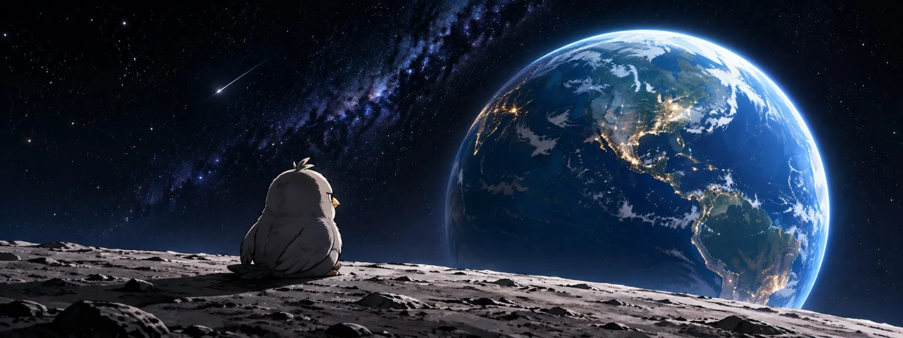

NEW / 新开放
探索灰鸟宇宙
三个新地方，进去看看。
EARTH OBSERVATION SYSTEM / V.03
LINK ESTABLISHED
01 — ARRIVAL / 抵达
UNSCHEDULED CONNECTION / 意外接入
GRAYBIRD
A gray bird arrived on Earth.
Now he's watching us.
一只来到地球，观察人类的灰鸟。
01 / ARRIVAL
SURFACE LINK / 月面信号
EARTH STANDARD TIME / UTC
BIRD NEST / 一只鸟的互联网领地
正在讨论 / Now Discussing
话题先留下。X 账号申诉中，评论现场暂未开放。
02 / OBSERVATION — THE BIRD
观察者档案
SUBJECT G–01 / GRAYBIRD
+
+
看起来不太高兴。
其实只是好奇。
你好，我是 Graybird。刚来到地球不久。
暂时没发现什么高级文明，所以决定先留下来看看。你们习以为常的事，在一只鸟看来，有时候挺奇怪。
- OBSERVER / 观察者
- Graybird
- SPECIES / 物种
- Unknown
- ORIGIN / 来处
- Unknown
- STATUS / 状态
- Watching…
03 / DATABASE — OBSERVATIONS
来自地球的记录
你们这个星球，
有点意思。
信号已接入。
选择频道，调阅一条地球记录。
SELECT A SUBJECT / 选择主题
SUBJECT: INTERNET
大家都在说话。
谁在听？
在这里，发出声音很容易。难的是，一句话离开熟人的评论区之后，还有人愿意把它带走。
先记下来。再观察一会儿。
01 / 02 · INTERNET
ONGOING OBSERVATION · 持续记录中
VISUAL FIELD NOTES / 图像观测档案
记录之外，还有画面。
他们都在赶路。
我先站一会儿。看看这个星球往哪里走。
这么多声音，来自同一颗星球。
飞近一点。也许能听见一句真正想说的话。
它也在看。
当答案开始回望，问题还在谁手里？
地球已经很晚了。
窗外的月亮没有更新。我又看了一次。
这里还没看过。
有些问题，走进去才知道。
网站还亮着。
有个地方，能把画面留下。
先在这里坐一会儿。
地球还在那边。
那颗蓝色的星球。
看着挺安静的。
嘎？
让我再看一眼。
这个城市还没睡。
楼下的灯，一盏一盏亮起来。
今天先看到这里。
还有一会儿才天黑。
查看完整画面 ↗
04 / TRANSMISSION — TRANSMISSIONS
来自人类互联网的信号
05 / PROJECT — THE PROJECT
未完待续
这只鸟，
才刚刚开始。
Graybird 是一个正在成长的原创互联网 IP。
X 是它在人类互联网里的声音。这里，是它自己的领地。观察会慢慢留下来，故事也会继续发生。
POSSIBLE NEXT CHAPTERS / 未来探索方向
- Comics & Stories 漫画与故事
- Stickers 表情与贴纸
- Collectibles & Merchandise 收藏与周边
- Collaborations 创意合作
这些仍是未来方向，尚未作为产品或服务上线。